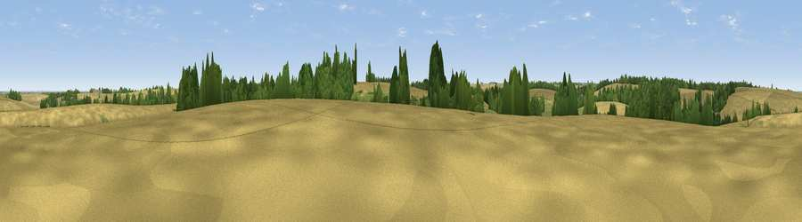

Round Hill
#40005 in England · top 84% of its area beats it · near HatcliffeThe view, rendered

A 360° render of this exact spot computed from the terrain model, tree cover and land cover — summer colours, afternoon light, calibrated against photographs of famous viewpoints. Real trees, hedges and buildings will differ in detail.
The panorama
Grey silhouette: terrain skyline in each direction (720 bearings, Earth curvature and refraction included). Dashed green: skyline with trees (+15 m) and buildings (+8 m) as obstacles. Blue strip: how far the ground is visible on each bearing.
Where the view opens
Wedge length = distance to the farthest visible ground on that bearing (vegetation-aware). Rings at 10, 25 and 50 km.
What fills the view
74% cropland · 13% grassland · 12% woodland
Angular shares of the visible panorama (visual magnitude), not map area. Landscape diversity 0.34 (0–1 Shannon).
Key numbers
More beautiful places nearby
The staircase of upgrades: each row has a higher view potential than everything closer. Driving times are estimates from straight-line distance, calibrated against real road routing — check an actual route before setting out.
| Place | Direction | Drive | Score |
|---|---|---|---|
| Viewpoint near Hatcliffe | NNW · 1 km | ~4 min | 42.1 |
| Ravendale Top | E · 2 km | ~5 min | 49.6 |
| Viewpoint near Wold Newton | SE · 5 km | ~11 min | 57.3 |
| Fonaby Top | WNW · 9 km | ~18 min | 60.7 |
| Viewpoint near Nettleton | W · 11 km | ~21 min | 64.7 |
| Viewpoint near Claxby | WSW · 11 km | ~21 min | 70.5 |
| Viewpoint near Claxby | WSW · 11 km | ~22 min | 71.5 |
| Garrowby Hill (A166 crest) | NW · 70 km | ~93 min | 71.9 |
53.48652, -0.16589 · source: osm peak · position refined by local search. Computed location — check access rights before visiting.